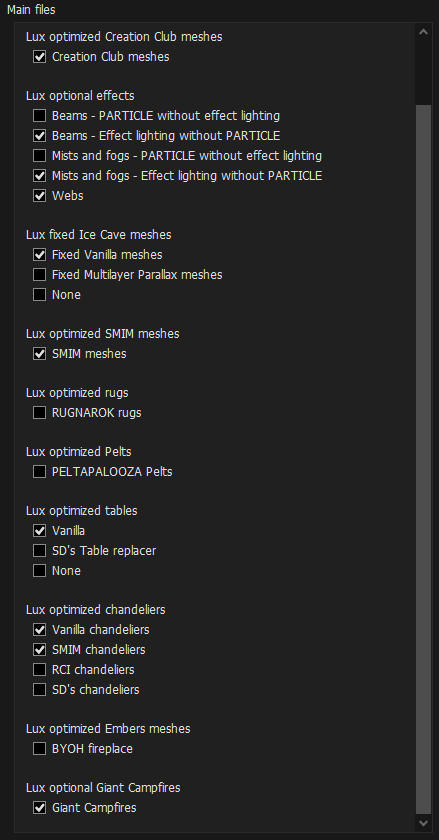

- Right-click the empty space in the left pane of MO2 and select Create Separator
- Name the separator Visuals
Installation instructions:
- Main File - EVLaS
- Optional File - EVLaS Skyrim Underside
- SKSE plugin that improves volumetric lighting and shadows by synchronizing them with Skyrim's sun and moon(s)
Installation instructions:
- Main File - Cathedral - Weathers
- A natural-fantasy weather mod
Installation instructions:
- Download the Main File - Blended Roads through MO2 and begin the installation normally
- You will be prompted with a FOMOD installer, select Really Blended Roads in both sections and then Install
- Finish the installation normally
- Better blends roads into the landscape textures to avoid seams and gives them 3D meshes to look more natural
Installation instructions:
- Main File - SMIM SE 2-08
- You will be prompted with a FOMOD installer, click Install
- A massive project to greatly improve the appearance of countless static 3D models
Installation instructions:
- Main File - Assorted mesh fixes
- Fixes various issues with vanilla Skyrim meshes that causes them to render incorrectly
Installation instructions:
- Main File - Assorted Mesh Fixes - SMIM - Really Blended Roads Patch
- Patch between Assorted Mesh Fixes, SMIM and Really Blended Roads
Installation instructions:
- Main File - A. Noble Skyrim - FULL PACK_2K
- NSM - SMIM Patch
(When prompted, expand the names drop-down and select the second one)
- Retextures most of the game without going overboard. This is a good base if you want to add your own retextures to the game
Installation instructions:
- Main File - Water Mod
- You will be prompted with a FOMOD installer, select 2K Textures and then Install
- A light-weight water mod
Installation instructions:
- Main File - Water Effects Brightness and Reflection Fix
- You will be prompted with a FOMOD installer, click Install
- Fixes bright water effects at night and neon green reflections
Installation instructions:
- Main File - Lux Resource Pack (No ENB Light)
- Resources needed for Lux
Installation instructions:
- Main File - Lux
- You will be prompted with a FOMOD installer, select the following options:

- Click next and then Install
- Consistent and complete rework of Skyrim interiors lighting
Installation instructions:
- Download the Main File - Security Overhaul SKSE - Lock Variations through MO2 and begin the installation normally
- You will be prompted with a FOMOD installer, select 2K Textures and then Install
If you have a very little VRAM, you can select the 1K Textures instead.
- SKSE based framework for replacing overused lock model with unique lock variants
Installation instructions:
- Download the Main File - Security Overhaul SKSE - Regional Locks through MO2 and begin the installation normally
- You will be prompted with a FOMOD installer, select 2K Textures and then Install
If you have a very little VRAM, you can select the 1K Textures instead.
- Regional variant lock models
Installation instructions:
- Download the Main File - Security Overhaul SKSE - Add-ons through MO2 and begin the installation normally
- You will be prompted with a FOMOD installer, select 2K Textures and then Install
If you have a very little VRAM, you can select the 1K Textures instead.
- Additional variant lock models